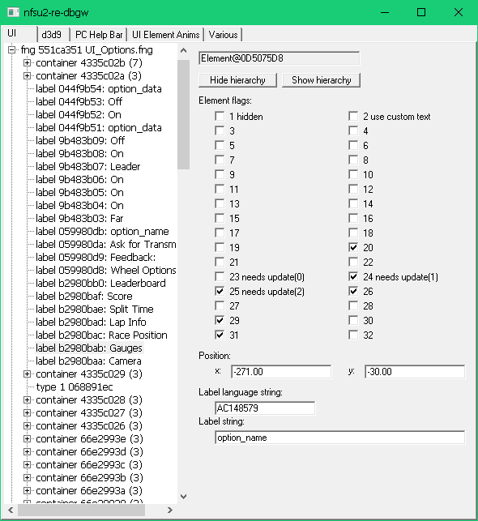
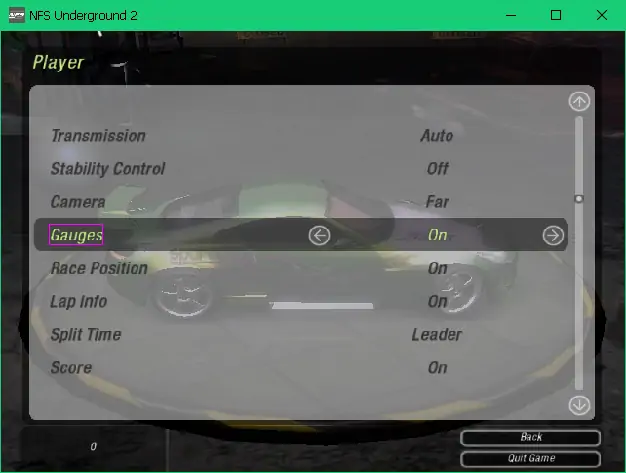
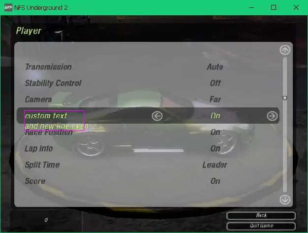
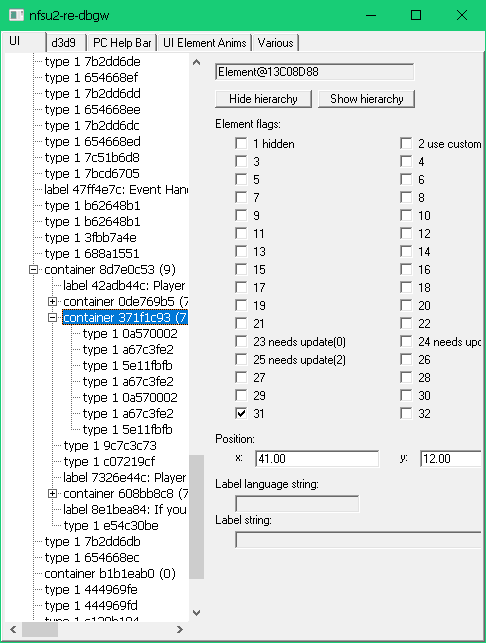
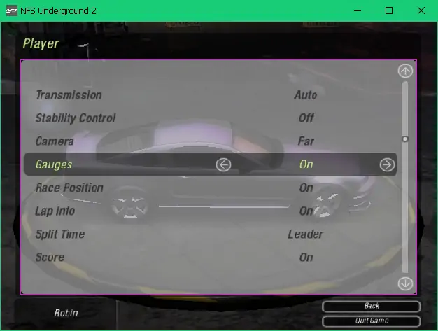
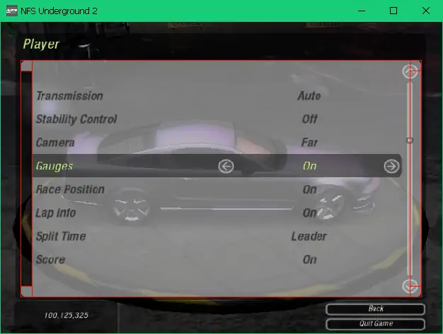
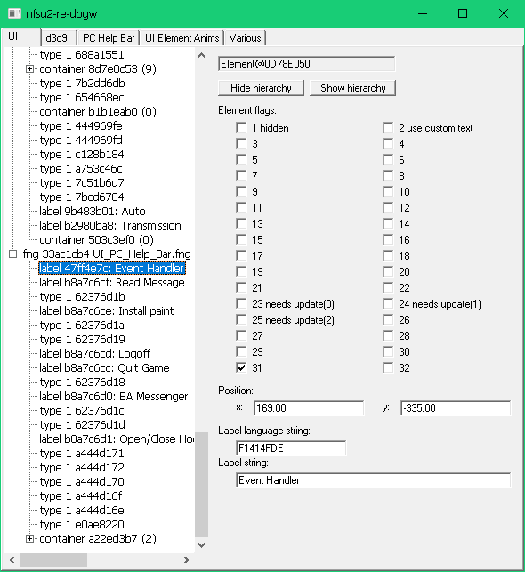
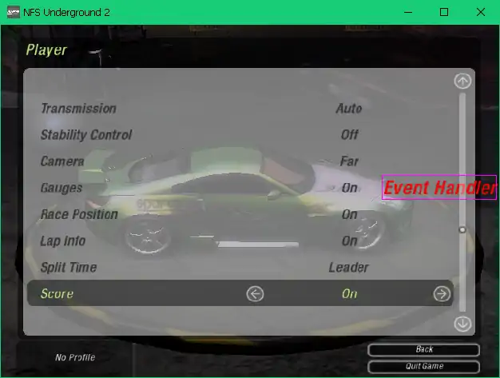
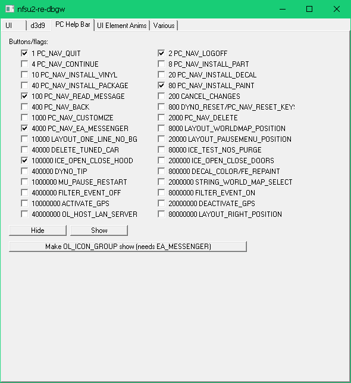
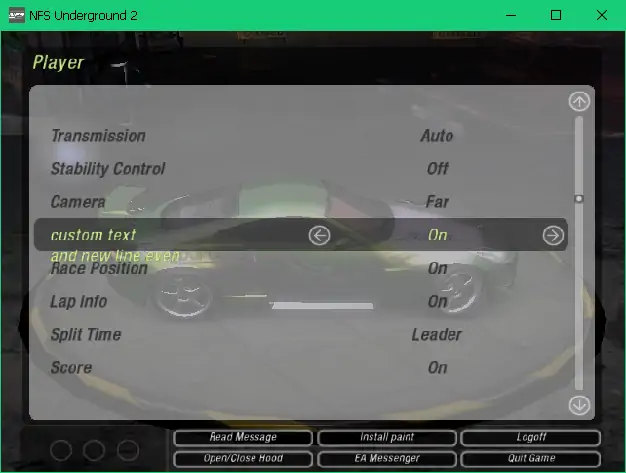

blog > Exploring UI (2022 Apr 23)
This blogpost was written when the repository was at revision 06ca59c362c490a384367511b9378517efe0f39b.
Near the end of 2020, I wrote some code to have "debug window" while the game is running. I added some D3D stuff (to render normally/wireframes/points and toggle flatshading), and added a checkbox to switch the car customization menu between normal and debug.
The next thing I soon added was a treeview of all UI elements and their properties.
The UI treeview shows all FNG screens that are displayed, and all their child
UI elements. The top FNG screen is read from
pUIData->field_8->fngPackagesDC.__parent.first and
its child is followed until the next child is unset.
For each struct FNGInfo, its rootUIElement is read and its
nextSibling is followed until the next nextSibling is unset.
If any element's type is 5, it's a struct UIContainer so its
rootElement is read and iterated as well.
See function dbgw_ui_tree_update_before_present in
nfsu2-re-hooks/dbgw_a_main.c.

A magenta rectangle will be drawn around the UI element that is selected:

In the image of the previous section, the selected ui element was a label with
a textLanguageString of AC148579, which is the hash
(see Hash functions) of OPT_PLAYER_GAUGES, which, for English, results
in the text Gauges.
If I now check the checkbox for flag with value 2 (USE_CUSTOM_TEXT),
the customString will be used (displayed as "Label string" in the img).
I can also change this text to custom text^and new line even. The caret ^
symbol is interpreted by the game's text renderer as a linefeed.

Many of the UI elements seem to exist to draw textures that make the UI. Those elements are elements with type 1, they're of type struct UIElementType1. A the time of writing, this struct is a dummy because I haven't really explored it yet.

The container element selected in the above screenshot groups all elements that make up the inner grey rounded rectangle.

The 7 children of the container are struct UIElementType1 elements. The picture below shows all 7 elements, 4 of which are the corners, 2 are the vertical sections on each side between the corners and one big rectangle in the middle. Perhaps only the 4 corners are using a texture and the 3 other elements are just drawing a color and not using a texture? I don't know yet. I've added the HIDDEN flag to the left vertical section element to "prove" that the red lines are factually showing each separate UI element.

Nearly all FNG screens seem to have a label with the text
Event Handler.

Interestingly, the label's y position is -335, which is outside the screen
(since the UI works on a 640x480 canvas, where x is [-320,320] and y is
[-240,240]. Let's see what it looks like when I change the y position to
-35:

Very interesting, because of its name and red text is pretty rare to see in this game. I have no idea what this element does, but I guess it's pretty important. I also wonder why the element is positioned outside of the screen instead of having the HIDDEN flag.
Elements can have animations, such as zooming or fading in/out and others.
struct UIElement.firstAnimation stores all animation things per
element. There is also struct UIElement.currentAnimation?.
Here's a dump of all animations on the label element that shows your profile
name in the bottom bar, the name label that gets swapped with your bank amount
every few seconds:
dumping animations for 0D53F938 animation@17D32DD8 hash CCFA (<unknown>) animation@17D32E0C hash 1744B3 (Init) animation@17D32E40 hash 7AB70D67 (STATIC) animation@17D32E74 hash 54C20A66 (Fade_Out) CURRENT animation@17D32EA8 hash BCC00F05 (Fade_In)
Currently I haven't explored this much yet, so struct UIElement_Animation only has one known field right now: hash_30 From the list of hashes I'm collecting (see Hash functions), I can assign names to some of the hashes, but not all of them.
Here's a dump of all the animations on the Event Handler element:
dumping animations for 17D35E40 animation@17D2F764 hash 1744B3 (Init) animation@17D2F798 hash DE6EFF34 (FORWARD) animation@17D2F7CC hash 1335F0 (<unknown>) animation@17D2F800 hash 13C37B (CALL) CURRENT animation@17D2F834 hash 3D8EABC (UNDIM) animation@17D2F868 hash 9E99 (DIM) animation@17D2F89C hash 885C68D7 (<unknown>) animation@17D2F8D0 hash 5BE88AE5 (<unknown>) animation@17D2F904 hash 24C03C89 (<unknown>) animation@17D2F938 hash 6B824FFE (<unknown>) animation@17D2F96C hash 45E1D832 (<unknown>) animation@17D2F9A0 hash 451D2D46 (<unknown>) animation@17D2F9D4 hash 58BDA1CB (<unknown>) animation@17D2FA08 hash 18E4B133 (<unknown>) animation@17D2FA3C hash BBD90008 (<unknown>) animation@17D2FA70 hash 7069F5AC (<unknown>)
It has a lot of unknown hashes, but also FORWARD and CALL and Init.
They don't really sound like names for animations, so perhaps these things
are more than just animations? Some are definitely animations though,
because elements fade out when calling SetUIElementAnimationByName(element, "Fade_Out", 1);.
The PC help bar is the bar at the bottom that has a bunch of buttons and your profile name/bank. See also PC help bar. One tab in the debug window has a checkbox for each value in enum PCHELPBARFLAGS, which gets synced by using PCHelpBarFNGObject::SyncByMask whenever a checkbox is changed.

